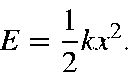
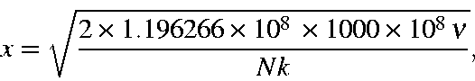

Next: A Note on Thermochemistry
Up: Normal Coordinate Calculation
Previous: Effective masses
Travel
To continue the idea of representing a normal mode as a simple harmonic
oscillator, the distance the atoms move through can be represented as the
distance the idealized mass moves through. This can be calculated knowing the
energy of the mode and the force constant:

Here k is the force-constant for the mode, and is given by
E is the energy of the mode.
From this, the distance, x, which the system moves through, can be calculated
from

where 1.196266x108
is the conversion factor from cm-1 to ergs,
1000 converts from millidynes to dynes, 108 converts from cm to Å, and
N converts from moles to molecules.
Note that x, which in the output is called TRAVEL, is in mass weighted
space, not simple space. This quantity can also be calculated using the DRC,
by depositing one quantum of energy into a vibrational mode. For a system at a
stationary point, the relevant keywords would be IRC=1
DRC t=1m. For
larger systems, the time may need to be increased. At least one coordinate
must have an optimization flag set to 1. This is required in order to instruct
the DRC to print the turning points.
Next: A Note on Thermochemistry
Up: Normal Coordinate Calculation
Previous: Effective masses
J. J. P. Stewart
Fujitsu Ltd. 2001